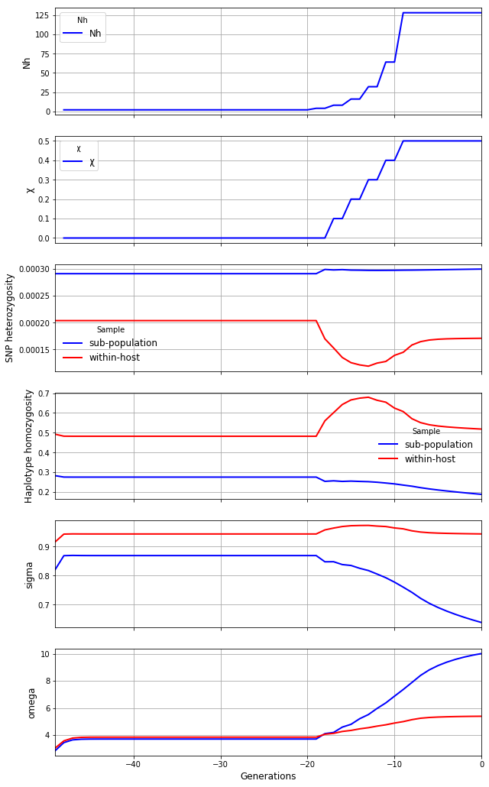

Modelling a local outbreak
Modelling a local outbreak#
My Drive/GitHub/transmission_ms/local_outbreak.ipynb
Checked in working order 31 Oct 2022
From 211015_local_outbreak.ipynb
import coalestr as cs
import numpy as np
import matplotlib.pyplot as plt
def scenario(list_of_periods):
def period(duration, N = None, Q = None, X = None, M = None):
if type(N) in (int, float):
output[start:start + duration, 0] = N
elif type(N) is tuple:
if N[0] == "lin":
delta = N[1] - N_in_previous_period / duration
for t in range(duration):
output[t, 0] = output[t - 1, 0] + delta
elif N[0] == "exp":
R = np.exp(np.log(N[1] - N_in_previous_period) / duration)
for t in range(duration):
output[t, 0] = output[t - 1, 0] * R
my_species = cs.species()
my_species.get_coalescent(show = False)
my_species.get_diversity(show = False)
history = [[1000, 2, 3, 0, 1],
[2, 4, 3, 0, 1],
[2, 8, 3, 0.1, 1],
[2, 16, 3, 0.2, 1],
[2, 32, 3, 0.3, 1],
[2, 64, 3, 0.4, 1],
[10, 128, 3, 0.5, 1]]
observe = range(50)
my_village = cs.Population(history, metapopulation = my_species)
my_village.get_coalescent(observe, show = True)
Observation time. Events captured. Mean coalescence time
beho wiho beho wiho
0 100.0 100.0 13619.8 7766.4
1 100.0 100.0 13609.1 7759.1
2 100.0 100.0 13598.2 7750.2
3 100.0 100.0 13587.2 7738.1
4 100.0 100.0 13575.9 7719.1
5 100.0 100.0 13564.6 7685.2
6 100.0 100.0 13553.4 7619.3
7 100.0 100.0 13542.6 7483.8
8 100.0 100.0 13533.0 7197.2
9 100.0 100.0 13526.5 6582.3
10 100.0 100.0 13516.8 6323.4
11 100.0 100.0 13512.2 5806.2
12 100.0 100.0 13508.9 5668.6
13 100.0 100.0 13510.9 5408.0
14 100.0 100.0 13525.0 5513.7
15 100.0 100.0 13533.1 5704.4
16 100.0 100.0 13573.9 6143.6
17 100.0 100.0 13547.3 6946.9
18 100.0 100.0 13589.0 7718.6
19 100.0 100.0 13230.6 9261.9
20 100.0 100.0 13230.6 9261.9
21 100.0 100.0 13230.6 9261.9
22 100.0 100.0 13230.6 9261.9
23 100.0 100.0 13230.6 9261.9
24 100.0 100.0 13230.6 9261.9
25 100.0 100.0 13230.6 9261.9
26 100.0 100.0 13230.6 9261.9
27 100.0 100.0 13230.6 9261.9
28 100.0 100.0 13230.6 9261.9
29 100.0 100.0 13230.6 9261.9
30 100.0 100.0 13230.6 9261.9
31 100.0 100.0 13230.6 9261.9
32 100.0 100.0 13230.6 9261.9
33 100.0 100.0 13230.6 9261.9
34 100.0 100.0 13230.6 9261.9
35 100.0 100.0 13230.6 9261.9
36 100.0 100.0 13230.6 9261.9
37 100.0 100.0 13230.6 9261.9
38 100.0 100.0 13230.6 9261.9
39 100.0 100.0 13230.6 9261.9
40 100.0 100.0 13230.6 9261.9
41 100.0 100.0 13230.6 9261.9
42 100.0 100.0 13230.6 9261.9
43 100.0 100.0 13230.6 9261.9
44 100.0 100.0 13230.6 9261.9
45 100.0 100.0 13230.6 9261.9
46 100.0 100.0 13230.6 9261.9
47 100.0 100.0 13230.6 9261.9
48 100.0 100.0 13230.6 9261.9
49 100.0 100.0 13230.6 9261.9
my_village.get_diversity(show = True)
Please get_diversity() for the metapopulation and try again.
Observation time. SNP heterozygosity. Haplotype homozygosity at 27.0 kb locus
beho wiho beho wiho
49 2.91e-04 2.04e-04 2.83e-01 4.92e-01
48 2.91e-04 2.04e-04 2.76e-01 4.82e-01
47 2.91e-04 2.04e-04 2.75e-01 4.82e-01
46 2.91e-04 2.04e-04 2.75e-01 4.82e-01
45 2.91e-04 2.04e-04 2.75e-01 4.82e-01
44 2.91e-04 2.04e-04 2.75e-01 4.82e-01
43 2.91e-04 2.04e-04 2.75e-01 4.82e-01
42 2.91e-04 2.04e-04 2.75e-01 4.82e-01
41 2.91e-04 2.04e-04 2.75e-01 4.82e-01
40 2.91e-04 2.04e-04 2.75e-01 4.82e-01
39 2.91e-04 2.04e-04 2.75e-01 4.82e-01
38 2.91e-04 2.04e-04 2.75e-01 4.82e-01
37 2.91e-04 2.04e-04 2.75e-01 4.82e-01
36 2.91e-04 2.04e-04 2.75e-01 4.82e-01
35 2.91e-04 2.04e-04 2.75e-01 4.82e-01
34 2.91e-04 2.04e-04 2.75e-01 4.82e-01
33 2.91e-04 2.04e-04 2.75e-01 4.82e-01
32 2.91e-04 2.04e-04 2.75e-01 4.82e-01
31 2.91e-04 2.04e-04 2.75e-01 4.82e-01
30 2.91e-04 2.04e-04 2.75e-01 4.82e-01
29 2.91e-04 2.04e-04 2.75e-01 4.82e-01
28 2.91e-04 2.04e-04 2.75e-01 4.82e-01
27 2.91e-04 2.04e-04 2.75e-01 4.82e-01
26 2.91e-04 2.04e-04 2.75e-01 4.82e-01
25 2.91e-04 2.04e-04 2.75e-01 4.82e-01
24 2.91e-04 2.04e-04 2.75e-01 4.82e-01
23 2.91e-04 2.04e-04 2.75e-01 4.82e-01
22 2.91e-04 2.04e-04 2.75e-01 4.82e-01
21 2.91e-04 2.04e-04 2.75e-01 4.82e-01
20 2.91e-04 2.04e-04 2.75e-01 4.82e-01
19 2.91e-04 2.04e-04 2.75e-01 4.82e-01
18 2.99e-04 1.70e-04 2.54e-01 5.60e-01
17 2.98e-04 1.53e-04 2.57e-01 6.02e-01
16 2.99e-04 1.35e-04 2.54e-01 6.43e-01
15 2.98e-04 1.25e-04 2.55e-01 6.66e-01
14 2.97e-04 1.21e-04 2.53e-01 6.75e-01
13 2.97e-04 1.19e-04 2.52e-01 6.80e-01
12 2.97e-04 1.25e-04 2.49e-01 6.64e-01
11 2.97e-04 1.28e-04 2.45e-01 6.54e-01
10 2.97e-04 1.39e-04 2.41e-01 6.25e-01
9 2.97e-04 1.45e-04 2.35e-01 6.07e-01
8 2.98e-04 1.58e-04 2.29e-01 5.71e-01
7 2.98e-04 1.65e-04 2.22e-01 5.51e-01
6 2.98e-04 1.68e-04 2.16e-01 5.40e-01
5 2.98e-04 1.69e-04 2.10e-01 5.34e-01
4 2.99e-04 1.70e-04 2.05e-01 5.30e-01
3 2.99e-04 1.70e-04 2.01e-01 5.26e-01
2 2.99e-04 1.70e-04 1.96e-01 5.23e-01
1 2.99e-04 1.71e-04 1.92e-01 5.21e-01
0 3.00e-04 1.71e-04 1.88e-01 5.18e-01
my_village.get_segments(show = True)
Shared haplotype segments of 2 units or more, in a chromosome of length 100 units
where one unit is 13.50 kilobases
Observation time Between host Within host
omega sigma mean kb omega sigma mean kb
49 2.86 0.82 388.21 3.05 0.92 405.98
48 3.45 0.87 340.21 3.58 0.94 356.08
47 3.65 0.87 321.62 3.79 0.94 336.71
46 3.70 0.87 317.26 3.84 0.94 332.07
45 3.71 0.87 316.35 3.85 0.94 331.10
44 3.71 0.87 316.17 3.85 0.94 330.90
43 3.71 0.87 316.13 3.85 0.94 330.86
42 3.71 0.87 316.12 3.85 0.94 330.86
41 3.71 0.87 316.12 3.85 0.94 330.85
40 3.71 0.87 316.12 3.85 0.94 330.85
39 3.71 0.87 316.12 3.85 0.94 330.85
38 3.71 0.87 316.12 3.85 0.94 330.85
37 3.71 0.87 316.12 3.85 0.94 330.85
36 3.71 0.87 316.12 3.85 0.94 330.85
35 3.71 0.87 316.12 3.85 0.94 330.85
34 3.71 0.87 316.12 3.85 0.94 330.85
33 3.71 0.87 316.12 3.85 0.94 330.85
32 3.71 0.87 316.12 3.85 0.94 330.85
31 3.71 0.87 316.12 3.85 0.94 330.85
30 3.71 0.87 316.12 3.85 0.94 330.85
29 3.71 0.87 316.12 3.85 0.94 330.85
28 3.71 0.87 316.12 3.85 0.94 330.85
27 3.71 0.87 316.12 3.85 0.94 330.85
26 3.71 0.87 316.12 3.85 0.94 330.85
25 3.71 0.87 316.12 3.85 0.94 330.85
24 3.71 0.87 316.12 3.85 0.94 330.85
23 3.71 0.87 316.12 3.85 0.94 330.85
22 3.71 0.87 316.12 3.85 0.94 330.85
21 3.71 0.87 316.12 3.85 0.94 330.85
20 3.71 0.87 316.12 3.85 0.94 330.85
19 3.71 0.87 316.12 3.85 0.94 330.85
18 4.11 0.85 278.45 4.07 0.96 318.01
17 4.20 0.85 272.81 4.13 0.96 315.17
16 4.59 0.84 246.47 4.27 0.97 306.50
15 4.80 0.84 235.08 4.35 0.97 301.99
14 5.21 0.83 213.82 4.46 0.97 294.34
13 5.52 0.82 200.11 4.55 0.97 288.92
12 5.97 0.81 182.19 4.66 0.97 281.05
11 6.38 0.79 167.91 4.76 0.97 274.85
10 6.87 0.78 152.74 4.89 0.96 266.29
9 7.36 0.76 139.46 5.00 0.96 259.84
8 7.88 0.74 127.17 5.14 0.95 250.72
7 8.40 0.72 115.94 5.25 0.95 244.58
6 8.81 0.70 107.94 5.30 0.95 241.44
5 9.13 0.69 102.09 5.33 0.95 239.71
4 9.38 0.68 97.56 5.35 0.95 238.59
3 9.58 0.67 93.90 5.37 0.95 237.78
2 9.75 0.66 90.85 5.38 0.94 237.18
1 9.89 0.65 88.27 5.39 0.94 236.74
0 10.01 0.64 86.08 5.39 0.94 236.42
my_village.plot_observations(metrics = ("Nh", "chi", "snp_het", "hap_hom", "sigma", "omega", ))
